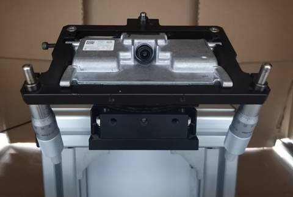

windshield calibration experiment
Impact of windshield distortion
The imaging of the front vision camera is affected by the optical parameters of the windshield, the shape of the curved surface, and the installation angle.
The pixel-grade error in the target detection in the image will be enlarged to the close-range perception of horizontal errors in the real world (affecting pedestrians cross-in, please perceive analysis)
If the bidding is not allowed, the results will be pulled out of the bid (optimizing the re -projection error, the internal and external coupling of the camera)
The green dotted line in the lower right is the light with windshields, and the purple dotted line is the light of non -winding glass. It can be seen that the position of the same point in the image has shifted (that is, windshield distortion)
Standard experimental plan
Experimental location: calibration room
Experimental materials: camera, windshield, table frame (unable to provide in the short term), cross laser level (with triangle)
Experimental requirements:
1. The relative location relationship of the windshield, the relative location of the camera and the windshield refer to the real car design value
2. The stiffness of the table frame is sufficient to resist the deformation caused by the weight of the glass
3. Adjust the table frame to make the camera and windshield facing the target wall. The distance from the target angle point is clear at the front and rear.
Standard Experimental Plan (Long-term) -The Appaming Evaluation Evaluation
Experiment 1: Calculate the internal and external parameters of the camera, calculate the distribution of heavy projection errors
data collection:
1. Collect the image with windshield, remove the windshield and then collect the image again
Precautions: Do not move the tables during the experiment (ensure that the external reference of the camera is unchanged)
The heavy projection error couples the camera's internal and external parameters to ensure that the external parameters are consistent, which can better reflect the impact
2. Before and after the windshield is removed, use the checkerboard standard fixed board to collect 20 ~ 30 images
Method:
1. Use the internal reference 1 and outer parameter 1 of the camera without windshield image 1, calculate the heavy projection error 1
2. Use windshield image 2 to calibrate the internal parameters of the camera 2 and outer parameter 2, calculate the heavy projection error 2
3. Use the internal reference 1 and the windshield image 2 to calibrate the external parameters of the camera 3, calculate the heavy projection error 3
4. Use a checkerboard image with windshield to calibrate internal parameters. Calculate heavy projection error 4
5. Use a checkerboard image without windshield to calibrate internal reference 4, calculate the heavy projection error 5
Comparative analysis:
1. Renewal error 1 VS heavy projection error 2 (evaluate internal and external coupling results)
2. External parameters 2 VS External Payment 3 (Evaluate Internal Ginseng 1 and Internal Payments 2 on the impact of external parameter results calibrated by windshield image 2)
3. Internal Payment 3 VS Internal Payment 4 + Research Error 4 VS Re -projection Error 5 (Evaluate the effect of windshield on the internal reference calibration)
Experiment 2: Cross Laser level meter directly measures light offset
Data Collection: Adjust the horizontal corner point that is obviously distorted on the target wall (the yellow circle in the lower left and right corner of the image), and the offset of the cross cursor after the windshield is placed (multiple times)
Note: The laser laser laser laser laser laser transmission point through the structure of the tablet is near the camera light location
The windshield formula predicts the offset (a normalized plane 1m, converted to the actual distance according to the similar triangle)
Vertical V direction: Mean = 3mm / 6pixel, MAX = 6mm / 12pixel
Horizontal U direction: Mean = 1mm / 2pixel, MAX = 2mm / 4pixel
Standard Experimental Plan (Long-term) -The windshield modeling
STEP 1: Without windshield, use the checkerboard grid to collect the internal reference calibration data of 20 or 30 cameras
STEP 2: Fix the camera on the tablet
STEP 3: Collect a frame of calibration wall with windshield without windshield
STEP 4: Do not move the tablet, put on windshield, collect a frame of calibration wall picture
STEP 5: Slightly move the position and angle of the frame
Step 6: Repeat STEP 3 ~ 5
W1 calibration venue & tablet frame

Temporary experimental scheme (short -term)
limited by:
1. Chery's mass -produced camera and windshield cannot be obtained in the short term
2. The design and processing cycle of the table frame is long
3. The BOSCH camera is a hand -to -hand, the consistency is poor, and the internal parameters provided by the supplier are not accurate
This plan is used for rapid verification, the accuracy is low, and the quantitative analysis has risks
Experimental steps:
1. Adjust the location of the vehicle is facing the target wall, and the distance from the target angle point is clear.
Try to fill the camera vision as the same as possible
2. Collect windshield glass image 1, calibrate internal parameters and external parameters 1, calculate heavy projection error 1
3. Use chessboard to collect 20 ~ 30 images, calibrate internal reference 2, calculate heavy projection error 2
4. Mark the projection point of the center of the wheels on the ground, and establish a vehicle coordinate system
5. Moving the vehicle and.
6. Collect 20 ~ 30 images with chessboard standard fixed board, calibrate internal reference 3, calculate heavy projection error 3
7. According to the translation amount of the external reference TX and TY, adjust the horizontal instrument support center with the projection point of the camera light on the ground as much as possible (you can use the lead hammer)
8. Adjust the height and horizontal angle of the horizontal bracket, so that the laser wiring level on the target wall is vertically vertically and intersects as much as possible to the center of the image center (pay attention to the structural difference between the compensation level and the front vision camera, mainly high)
9. Remove the horizontal meter and install the front -to -see camera (to ensure that the camera's light heart and the laser emission point are roughly overlap)
10. Collect without windshield glass image 2, calibrate internal parameters 4, calculate heavy projection error 4
11. Use the internal reference 4 and the windshield image 1 to calibrate the external parameters of the camera 2, calculate the heavy projection error 5
Comparative analysis:
1. Internal reference 1 VS Internal Payment 2 + Rehabilitation Error 1 VS Re -projection Error 2 (Evaluate the effect of windshield on the calibration of internal reference)
2. Renewal error 3 VS heavy projection error 4 (evaluate internal and external coupling results)
3. External parameters 1 VS External parameters 2 (Evaluate Internal Ginseng 1 and Internal Payments 2 on the impact of external parameter results calibrated by windshield image 2)